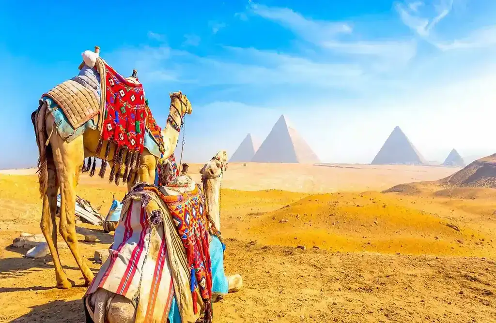

1- The Great Pyramid of Giza
Also known as the Pyramid of Khufu, it is the oldest amongst the seven wonders of the world and largest amongst the three other Giza pyramids. Made up of granite and limestone, the pyramids of Giza are almost 4500 years old. Visit this place and discover the ancient Egypt. It is believed that this pyramid was built as a tomb for a king. Try visiting the pyramid in the morning as only a limited number of visitors are allowed here on a daily basis.

Camel Rides
Ride camels around the pyramids and enjoy the ancient surroundings.

Take Photos
Capture the iconic pyramid from various angles and preserve memories.

Buying Historical Items
Purchase souvenirs and historical items from local vendors.